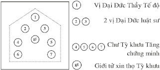

|
Trang web BuddhaSasana |
VU Times font |
|
|
GƯƠNG
BẬC XUẤT GIA
Dhammarakkhita Bhikkhu
II- NGHI THỨC LỄ THỌ TỲ KHƯU (Bhikkhu) - Tỳ khưu nghĩa là bậc sống nhờ vào sự đi khất thực. Lễ thọ Tỳ khưu có hai hạng người: 1- Vị Sa di đã trải qua năm tháng đủ 20 tuổi, muốn nâng lên bậc Tỳ
khưu. Người cận sự nam trước khi thọ Tỳ khưu, cũng phải qua nghi thức lễ thọ Sa di trước, rồi mới đến lễ nâng lên bậc Tỳ khưu sau. Thường lễ thọ Tỳ khưu tại Trung Ấn Ðộ (Majjhima-padesa), Tỳ khưu Tăng hội họp hành Tăng sự ít nhất có 10 vị Tỳ khưu thật trở lên; còn lại các nơi khác, (các nước ngoài), lễ thọ Tỳ khưu, Tỳ khưu Tăng hội họp hành Tăng sự ít nhất có từ 5 vị Tỳ khưu thật trở lên, chư Tỳ khưu Tăng cùng giới tử đều hội họp tại sīmā, chư Tỳ khưu mỗi vị ngồi cách nhau khoảng 2 cùi tay với 1 gang (hatthapāsa) theo vị trí như sau:  Hai vị Ðại Ðức Luật sư lễ bái Ðức Phật. Ls:- Namo Tassa Bhagavato Arahato Sammāsam-buddhassa (3 lần). Nghi lễ nâng Sa di lên bậc Tỳ khưu theo tuần tự như sau: A- Giai Ðoạn Ðầu Nghi Thức Lễ Thọ Tỳ Khưu Hai vị Ðại Ðức Luật sư ngồi chồm hổm (ukkuṭikaṃ nisīditvā), quay mặt vào nhau tụng: 1- Xin Ðại Ðức làm Thầy Tế độ Ls:- Paṭhamaṃ upajjhaṃ gāhāpetabbo. Công việc đầu tiên là xin Ðại Ðức làm Thầy Tế độ. Sd:- Upajjhāyo me Bhante hohi. (3 lần) Kính bạch Ðại Ðức, xin Ngài làm Thầy Tế độ của con. Ttđ:- Pāsādikena sampādehi.Con hãy cố gắng thực hành giới, định, tuệ cho đầy đủ, được thể hiện nơi thân, khẩu đáng để phát sanh đức tin trong sạch. Sd:- Āma Bhante. Kính bạch Ðại Ðức. Dạ, xin vâng. 2- Ðặt tên Sa di, tên Thầy Tế độ Ls:- Kính bạch chư Ðại Ðức Tăng được rõ, con xin phép đặt tên Sa di và giới thiệu tên vị Ðại Ðức Thầy Tế độ. - Vị Sa di này đặt tên: Nāga. - Này Sa di, con nên nhớ "Nāga" là tên của con. - Xin giới thiệu tên vị Ðại Ðức Thầy Tế độ. - Trường hợp này, có nơi gọi trực tiếp pháp danh của vị Ðại Ðức Thầy Tế độ. Ví dụ: "Buddharakkhita". Có nơi, vì sự kính trọng vị Ðại Ðức Thầy Tế độ, cho nên vị Ðại Ðức Luật sư không dám gọi trực tiếp pháp danh của vị Ðại Ðức Thầy Tế độ; do đó có thể đặt một tên gián tiếp khác. Ví dụ: "Tissa". Vị Ðại Ðức Luật sư trình cho chư Tỳ khưu Tăng biết rõ tên Sa di là Nāga và tên vị Ðại Ðức Thầy Tế độ là Tissa. Ls:- Upajjhāyaṃ gāhāpetvā, pattacīvaraṃ ācikkhitabbaṃ. Lễ xin Thầy Tế độ xong rồi, nay hỏi Sa di về sự đầy đủ y bát. 3- Xét hỏi y bát của Sa di Ðức Phật không cho phép Sa di không có y bát riêng của mình, xin làm lễ thọ Tỳ khưu. Tỳ khưu nào cho phép thọ Tỳ khưu rồi, Tỳ khưu ấy phạm giới tác ác. Vì vậy, Sư hỏi con. Ls:- Ayaṃ te patto? Này Nāga, cái bát này của con, có phải không? Gt:- Āma, Bhante. Kính bạch Ðại Ðức, Dạ! Thưa phải vậy. Ls:- Ayaṃ saṃghāṭi? Này Nāga, tấm y 2 lớp này của con, có phải không? Gt:- Āma, Bhante. Kính bạch Ðại Ðức, Dạ! Thưa phải vậy. Ls:- Ayaṃ uttarāsaṅgo? Này Nāga, tấm y vai trái này của con, có phải không? Gt:- Āma, Bhante. Kính bạch Ðại Ðức, Dạ! Thưa phải vậy. Ls:- Ayaṃ antaravāsakaṃ? Này Nāga, tấm y nội này của con, có phải không? Gt:- Āma, Bhante. Kính bạch Ðại Ðức, Dạ! Thưa phải vậy 4- Sa di giới tử đi ra ngoài phạm vi chư Tăng Ls:- Gaccha amumhi okāse tiṭṭhāhi. Này Nāga, con hãy đứng dậy đi lui ra ngoài phạm vi của chư Tăng hội họp, khoảng cách quá 2 cùi tay 1 gang, đứng chờ Sư ở chỗ ấy. Sa di giới tử đảnh lễ 3 lạy rồi chắp 2 tay ngang ngực, đi bằng 2 đầu gối lui ra khỏi phạm vi của chư Tỳ khưu Tăng, rồi đứng dậy từ từ đi ra quá 2 cùi tay 1 gang, đứng chắp tay quay mặt vào chỗ chư Tỳ khưu Tăng chờ vị Ðại Ðức Luật sư dạy bảo. Hai vị Ðại Ðức Luật sư trình chư Tăng, xin phép dạy bảo giới tử: Ls:- Suṇātu me Bhante saṃgho, Nāgo āyasmato Tissassa upasampadāpekkho, yadi saṃghassa pattakallaṃ, ahaṃ Nāgaṃ anusāseyyaṃ. [*] Kính bạch chư Ðại Ðức Tăng, xin chư Tăng nghe rõ lời trình của con. Sa di giới tử Nāga là đệ tử của Ðại Ðức Tissa muốn thọ Tỳ khưu. Nếu việc hành Tăng sự hợp thời đối với chư Tăng, con xin phép dạy bảo Sa di giới tử Nāga. Hai vị Ðại Ðức Luật sư đảnh lễ chư Tăng, xin phép ra khỏi phạm vi của chư Tăng hội họp, đến chỗ Sa di giới tử Nāga để dạy bảo. [*] Trường hợp vị Luật sư tự mình không dạy bảo Sa di, có thể giới thiệu một vị Luật sư khác tên Paṇḍità dạy bảo Sa di, nên trình giữa chư Tỳ khưu Tăng rằng: Suṇātu me Bhante saṃgho, Nāgo āyasmato Tissassa upasampadāpekkho, yadi saṃghassa pattakallaṃ, āyasmā Paṇḍito Nāgaṃ anusāseyya. Kính bạch chư Ðại Ðức Tăng, xin chư Tăng nghe rõ lời trình của con. Sa di giới tử Nāga là đệ tử của Ðại Ðức Tissa muốn thọ Tỳ khưu. Nếu việc hành Tăng sự hợp thời đối với chư Tăng, xin cho Ðại Ðức Paṇḍita dạy bảo Sa di giới tử Nāga. Cách thức dạy bảo Sa di giới tử Ðức Phật cho phép rằng: "Anujānāmi bhikkhave paṭhamaṃ anusāsitvā pacchā antarāyike dhamme pucchituṃ. Anujānāmi bhikkhave ekamantaṃ anusāsitvā pacchā antarāyike dhamme pucchituṃ...". - Này chư Tỳ khưu, Như Lai cho phép đầu tiên dạy bảo Sa di giới tử hiểu rõ, rồi sau đó hỏi Sa di giới tử về 13 pháp tại hại. Này chư Tỳ khưu, Như Lai cho phép dạy bảo Sa di giới tử về 13 pháp tại hại ở một nơi cách phạm vi của chư Tăng hội họp quá 2 cùi tay 1 gang, rồi sau đó hỏi 13 pháp tai hại ở giữa chư Tăng. 5- Vị Ðại Ðức Luật sư đảm nhận phận sự dạy bảo Sa di giới tử Ls:- Suṇāsi Nāga, ayaṃ te saccakālo, bhūtakālo, yaṃ jātaṃ, taṃ saṃghamajjhe pucchante santaṃ "atthī"ti vattabbaṃ. Asantaṃ "natthī"ti vattabbaṃ. Mā kho vitthāyi, mā kho maṅku ahosi. Evaṃ taṃ pucchissanti. Santi te evarūpā ābādhā. - Này Nāga, Sư dạy bảo con, con hãy lắng nghe cho rõ, sắp đến giờ làm lễ thọ Tỳ khưu của con, lúc ấy con phải nói thật, lúc ấy con phải nói đúng theo sự thật ở giữa chư Tăng hội họp, những bệnh hoạn nào có trong thân thể và những sự thật nào có trong cuộc đời của con, khi vị Ðại Ðức luật sư xét hỏi con về những điều ấy. - Nếu điều gì có thật, thì con phải nên thành thật trả lời "atthi Bhante" hoặc "Āma, Bhante": Dạ! Phải vậy. Bạch Ngài. - Nếu điều gì không có thật, thì con phải nên thành thật trả lời "natthi Bhante": Con không có vậy. Bạch Ngài. Con chớ nên sợ sệt, đứng đờ người không nói, con chớ nên xấu hổ mặt mày không vui. Như vậy, Sư sẽ hỏi, con có những bệnh, như thế này: - Bởi vì Ðức Phật răn cấm rằng: - Này chư Tỳ khưu, trong thân của Sa di giới tử mắc phải 1 trong 5 chứng bệnh: bệnh cùi, bệnh ung nhọt, bệnh ghẻ lở, bệnh ho lao và bệnh điên, không được cho phép thọ Tỳ khưu. Tỳ khưu nào cho phép thọ Tỳ khưu rồi, Tỳ khưu ấy phạm giới dukkaṭa (tác ác). Vì vậy, Sư hỏi con, trong thân thể của con có mắc phải những bệnh như là: Ls:- Kuṭṭhaṃ? Con có mắc bệnh cùi hay không? Gt:- Natthi Bhante. Con không có. Bạch Ngài. Ls:- Gaṇṇo? Con có mắc bệnh ung nhọt hay không? Gt:- Natthi Bhante. Con không có. Bạch Ngài. Ls:- Kilāso? Con có mắc bệnh ghẻ lở hay không? Gt:- Natthi Bhante. Con không có. Bạch Ngài. Ls:- Soso? Con có mắc bệnh ho lao hay không? Gt:- Natthi Bhante. Con không có. Bạch Ngài. Ls:- Apamāro? Con có mắc bệnh điên hay không? Gt:- Natthi Bhante. Con không có. Bạch Ngài. - Ðức Phật răn cấm rằng: - Này chư Tỳ khưu, Tỳ khưu không được cho phép loài súc sanh rồng biến hóa thành người nam thọ Tỳ khưu. Nếu cho phép thọ Tỳ khưu rồi, cũng không thành Tỳ khưu (trở lại thành rồng như cũ). Vì vậy, Sư hỏi con. Ls:- Manusso’si? Con có phải loài người thật hay không? Gt:- Āma, Bhante. Dạ, con là người thật. Bạch Ngài. - Ðức Phật răn cấm rằng: - Này chư Tỳ khưu, Tỳ khưu không được cho phép người ái nam (bán nam, bán nữ) thọ Tỳ khưu. Nếu cho phép thọ Tỳ khưu rồi, cũng không thành Tỳ khưu. Vì vậy, Sư hỏi con. Ls:- Puriso’si? Con có phải người nam thật hay không? Gt:- Āma, Bhante. Dạ, con là người nam thật. Bạch Ngài. - Ðức Phật răn cấm rằng: - Này chư Tỳ khưu, Tỳ khưu không được cho phép người nam còn là tôi tớ của người khác thọ Tỳ khưu. Tỳ khưu nào cho phép thọ Tỳ khưu rồi, Tỳ khưu ấy phạm giới tác ác. Vì vậy, Sư hỏi con. Ls:- Bhujisso’si? Con không phải là người tôi tớ của ai, phải không? Gt:- Āma, Bhante. Dạ, phải vậy. Bạch Ngài. - Ðức Phật răn cấm rằng: - Này chư Tỳ khưu, Tỳ khưu không được cho phép người nam còn mang nợ của người khác thọ Tỳ khưu. Tỳ khưu nào cho phép thọ Tỳ khưu rồi, Tỳ khưu ấy phạm giới tác ác. Vì vậy, Sư hỏi con. Ls:- Anaṇo’si? Con không phải là con nợ, phải không? Gt:- Āma, Bhante. Dạ, phải vậy. Bạch Ngài. - Ðức Phật răn cấm rằng: - Này chư Tỳ khưu, Tỳ khưu không được cho phép người công chức nhà nước thọ Tỳ khưu. Tỳ khưu nào cho phép thọ Tỳ khưu rồi, Tỳ khưu ấy phạm giới tác ác. Vì vậy, Sư hỏi con. Ls:- Na’si, rājabhaṭo? Con không phải là công chức nhà nước, phải không? Gt:- Āma, Bhante. Dạ, phải vậy. Bạch Ngài. - Ðức Phật răn cấm rằng: - Này chư Tỳ khưu, Tỳ khưu không được cho phép người con trai, mà cha mẹ chưa cho phép xuất gia thọ Tỳ khưu, Tỳ khưu nào cho phép thọ Tỳ khưu rồi, Tỳ khưu ấy phạm giới tác ác. Vì vậy, Sư hỏi con. Ls:- Anuññāto’si mātāpitūhi? Con đã được cha mẹ cho phép xuất gia rồi, phải không? Gt:- Āma, Bhante. Dạ, phải vậy. Bạch Ngài. - Ðức Phật răn cấm rằng: - Này chư Tỳ khưu, Tỳ khưu biết rõ người nam chưa đầy đủ 20 tuổi, không được cho phép thọ Tỳ khưu. Tỳ khưu nào cho phép thọ Tỳ khưu, nên quyết định theo pháp luật. Vì vậy, Sư hỏi con. Ls:- Paripuṇṇavīsativasso’si? Con đã đầy đủ 20 tuổi kể từ khi tái sanh trong lòng mẹ, phải không? Gt:- Āma, Bhante. Dạ, phải vậy. Bạch Ngài - Ðức Phật răn cấm rằng: - Này chư Tỳ khưu, Tỳ khưu không nên cho phép người nam vay mượn y bát thọ Tỳ khưu. Tỳ khưu nào cho phép thọ Tỳ khưu, Tỳ khưu ấy phạm giới tác ác. Vì vậy, Sư hỏi con. Ls:- Paripuṇṇaṃ te patacīvaraṃ? Con có đầy đủ tam y và bát rồi, phải không? Gt:- Āma, Bhante. Dạ, phải vậy. Bạch Ngài. Ls:- Kiṃ nāmo’si? Tên con gọi là gì? Gt:- Ahaṃ Bhante, Nāgo nāma. Tên con gọi là "Nāga". Bạch Ngài Ls:- Ko nāmo te upajjhāyo? Tên vị Ðại Ðức Thầy Tế độ của con gọi là gì? Gt:- Upajjhāyo me Bhante, āyasmā Tissatthero nāma. Tên vị Ðại Ðức Thầy Tế độ của con gọi là Ðại Ðức "Tissatthera". Bạch Ngài. - Này Nāga, con nên ghi nhớ rõ 15 điều mà Sư đã dạy bảo. Khi con vào giữa chư Tăng hội họp, vị Ðại Ðức Luật sư hỏi, con phải trả lời đúng theo sự thật, điều nào không có, con phải trả lời rằng: "Natthi Bhante" (Con không có. Bạch Ngài). Ðiều nào có, con phải trả lời rằng: "Āma, Bhante" (Dạ! Phải vậy. Bạch Ngài). - Ðức Phật răn cấm rằng: - Này chư Tỳ khưu, vị Ðại Ðức Luật sư và Sa di giới tử không được phép cùng một lúc vào giữa chư Tăng hội họp. Vị Ðại Ðức Luật sư đi vào giữa chư Tăng hội họp trước, trình cho chư Tăng được rõ bằng ñatti (tuyên ngôn). Vì vậy, con phải đứng chờ Sư tại nơi đây, cho đến khi nào Sư trình bằng ñatti xong rồi, chư Tăng cho phép gọi con mới được vào. 6- Vị Luật sư trình chư Tăng, gọi giới tử vào Ls:- Suṇātu me Bhante saṃgho, Nāgo āyasmato Tissassa upasampadāpekkho, anusiṭṭho so mayā, yadi saṃghassa pattakallaṃ, Nāgo āgaccheyya. - (Āgacchāhī’ti vattabbo). - Kính bạch chư Ðại Ðức Tăng, xin chư Tăng nghe rõ lời trình của con, Sa di giới tử Nāga là đệ tử của Ðại Ðức Tissa muốn nâng lên bậc Tỳ khưu. Con đã dạy bảo Sa di xong rồi. Nếu việc hành Tăng sự hợp thời đối với chư Tăng, xin phép cho Sa di giới tử Nāga vào. - (Cho phép Sa di giới tử Nāga vào đây). 7- Sa di giới tử xin nâng lên bậc Tỳ khưu Ðược phép đi vào nơi chư Tăng hội họp, Sa di giới tử chắp hai tay ngang ngực đi đến phạm vi của chư Tăng, quỳ xuống đi bằng đầu gối vào giữa chư Tăng hội họp, mặc y chừa vai bên phải, đảnh lễ chư Tăng 3 lạy, ngồi chồm hổm, chắp 2 tay ngang trán đọc câu xin nâng lên bậc Tỳ khưu rằng: Gt:- Saṃghaṃ Bhante, upasampadaṃ yācāmi, ullumpatu maṃ Bhante, saṃgho anukampaṃ upādāya. - Dutiyampi, Saṃghaṃ Bhante, upasampadaṃ yācāmi, ullumpatu maṃ Bhante saṃgho anukampaṃ upādāya. - Tatiyampi, Saṃghaṃ Bhante, upasampadaṃ yācāmi, ullumpatu maṃ Bhante, saṃgho anukampaṃ upādāya. - Kính bạch chư Ðại Ðức Tăng, con xin chư Tăng cho con thọ Tỳ khưu. Kính bạch chư Ðại Ðức Tăng, xin chư Tăng từ bi thương xót tế độ nâng đở con lên bậc Tỳ khưu....... Lần thứ nhì. ...... Lần thứ ba. Sa di giới tử đảnh lễ chư Tăng 3 lần, rồi ngồi chồm hổm, chắp 2 tay lắng nghe vị Ðại Ðức Luật sư xét hỏi. 8- Luật sư xét hỏi Sa di giới tử giữa chư Tăng Sau khi Sa di giới tử xin phép chư Tăng nâng lên bậc Tỳ khưu, vị Ðại Ðức Luật sư xét hỏi 13 pháp tai hại trong thân thể, cuộc đời của Sa di ở giữa chư Tăng rằng: Ls:- Suṇātu me Bhante saṃgho, ayaṃ Nāgo āyasmato Tissassa upasampadāpekkho, yadi saṃghassa pattakallaṃ, ahaṃ Nāgaṃ antarāyike dhamme puccheyyaṃ. - Suṇāsi Nāga, ayaṃ te saccakālo bhūtakālo, yaṃ jātaṃ, taṃ pucchāmi. - Santaṃ "atthī" ti vattabbaṃ. - Asantaṃ "natthī" ti vattabbaṃ. Santi te evarūpā ābādhā. Ls:- Kuṭṭhaṃ? Gt:- Natthi, Bhante. Ls:- Gaṇṇo? Gt:- Natthi, Bhante. Ls:- Kilāso? Gt:- Natthi, Bhante. Ls:- Soso? Gt:- Natthi, Bhante. Ls:- Apamāro? Gt:- Natthi, Bhante. Ls:- Manusso’si? Gt:- Āma, Bhante. Ls:- Puriso’si? Gt:- Āma, Bhante. Ls:- Bhujisso’si? Gt:- Āma, Bhante. Ls:- Anāṇo’si? Gt:- Āma, Bhante. Ls:- Na’si rājabhaṭo? Gt:- Āma, Bhante. Ls:- Anuññāto’si mātāpitūhi? Gt:- Āma, Bhante. Ls:- Paripuṇṇavīsativasso’si ? Gt:- Āma, Bhante. Ls:- Paripuṇṇaṃ te pattacīvaraṃ? Gt:- Āma, Bhante. Ls:- Kiṃ nāmo’si? Gt:- Ahaṃ Bhante, Nāgo nāma. Ls:- Ko nāmo te upajjhāyo? Gt:- Upajjhāyo me Bhante, āyasmā Tissatthero nāma. Vị Ðại Ðức Luật sư xét hỏi Sa di giới tử ở giữa chư Tăng hội họp về những pháp tai hại (antarāyikadhamma), và Sa di giới tử đã trả lời rõ ràng đúng theo sự thật: - Ðiều nào không có, Sa di thành thật trả lời: "không có". - Ðiều nào có, Sa di thành thật trả lời: "phải". (Xong giai đoạn đầu nghi thức lễ thọ Tỳ khưu). B- Giai Ðoạn Giữa Nghi Thức Lễ Thọ Tỳ Khưu Giai đoạn giữa là giai đoạn chính thức của nghi lễ để trở thành bậc Tỳ khưu. Khi vị Ðại Ðức Luật sư tụng 1 lần ñatti (tuyên ngôn), tiếp theo tụng 3 lần kammavācā (thành sự ngôn), gọi là ñatticatutthakammavācā xong, đồng thời Sa di giới tử trở thành vị Tỳ khưu (Bhikkhu) ngay khi ấy. Vị Luật Sư Tụng Ñatticatutthakammavācā Sự tụng ñatticatutthakammavācā có thể 2 hoặc 3 vị Ðại Ðức Luật sư, ngồi chồm hổm, 2 tay cầm bản, để tránh khỏi sai lầm, đồng nhau tụng như sau: Ls:- Namo Tassa Bhagavato Arahato Sammāsam-buddhassa (3 lần). - Tụng Ñatti (1 lần) Ls:- Suṇātu me Bhante saṃgho, ayaṃ Nāgo āyasmato Tissassa upasampadāpekkho, parisuddho antarāyikehi dhammehi, paripuṇṇa’ssa pattacīvaraṃ, Nāgo saṃghaṃ upasampadaṃ yācati, āyasmatā Tissena upajjhāyena. Yadi saṃghassa pattakallaṃ, saṃgho Nāgaṃ upasampādeyya, āyasmatā Tissena upajjhāyena. Esā ñatti. - Tụng Kammavācā (3 lần) Ls:- Suṇātu me Bhante saṃgho, ayaṃ Nāgo āyasmato Tissassa upasampadāpekkho, parisuddho antarāyikehi dhammehi, paripuṇṇa’ssa pattacīvaraṃ, Nāgo saṃghaṃ upasampadaṃ yācati, āyasmatā Tissena upajjhāyena, saṃgho Nāgaṃ upasampādeti, āyasmatā Tissena upajjhāyena. Yassāyasmato khamati, Nāgassa upasampadā āyasmatā Tissena upajjhāyena, so tuṇhassa, yassa nakkhamati, so bhāseyya. - Dutiyampi, etamatthaṃ vadāmi. Suṇātu me Bhante saṃgho, ayaṃ Nāgo āyasmato Tissassa upasampadāpekkho, parisuddho antarāyikehi dhammehi, paripuṇṇa’ssa pattacīvaraṃ, Nāgo saṃghaṃ upasampadaṃ yācati, āyasmatā Tissena upajjhāyena, saṃgho Nāgaṃ upasampādeti, āyasmatā Tissena upajjhāyena. Yassāyasmato khamati, Nāgassa upasampadā, āyasmatā Tissena upajjhāyena, so tuṇhassa, yassa nakkhamati, so bhāseyya. - Tatiyampi, etamatthaṃ vadāmi. Suṇātu me Bhante saṃgho, ayaṃ Nāgo āyasmato Tissassa upasampadāpekkho, parisuddho antarāyikehi dhammehi, paripuṇṇa’ssa pattacīvaraṃ, Nāgo saṃghaṃ upasampadaṃ yācati, āyasmatā Tissena upajjhāyena, saṃgho Nāgaṃ upasampādeti, āyasmatā Tissena upajjhāyena. Yassāyasmato khamati, Nāgassa upasampadā, āyasmatā Tissena upajjhāyena, so tuṇhassa, yassa nakkhamati, so bhāseyya. Upasampanno saṃghena Nāgo āyasmatā Tissena upajjhāyena, khamati saṃghassa, tasmā tuṇhī, evametaṃ dhārayāmi. Chư Ðại Ðức Luật sư tụng một lần ñatti (tuyên ngôn) tiếp theo tụng 3 lần kammavācā (thành sự ngôn) đến chữ cuối cùng "dhārayāmi", từng âm, từng chữ, từng câu đúng theo ṭhāna, karaṇa, payatama và đúng theo 10 byañjanabuddhi; nhất là những phụ âm, nguyên âm thuộc 4 loại sithila, dhanita, niggahita và vimutta đúng theo văn phạm Pāḷi, và đúng theo nghi lễ hành Tăng sự mà Ðức Phật đã ban hành, (Việc hành Tăng sự, tụng ñatticatutthakammavācā một lần hoặc có thể tụng 2-3 lần càng tốt), đồng thời ngay khi ấy, vị Sa di Nāga trở thành vị Tỳ khưu [*], gồm có bhikkhupātimokkhasīla 127 điều học, nếu kể rộng thì có 91.805.036.000 điều học; Tứ thanh tịnh giới; 14 pháp hành.... Vị Tỳ khưu ấy chính thức được gia nhâïp vào Tăng đoàn, được sống chung với chư Tỳ khưu Tăng, có quyền tham dự vào mọi nghi lễ hành Tăng sự của chư Tỳ khưu Tăng nói chung, không phân biệt nòi giống, giai cấp, quốc gia, dân tộc. Bởi vì, Tỳ khưu cùng là con cháu của dòng dõi Sakya (Sakyaputtiya) như nhau cả thảy. [*] Trở thành Tỳ khưu do hợp đủ 5 chi: 1- Vatthu sampatti: người cận sự nam không có lỗi. Ðầy đủ 5 chi không thiếu chi nào, lễ thọ Tỳ khưu mới thành tựu, Sa di trở thành Tỳ khưu thật. * Ý nghĩa lời tuyên ngôn - Kính bạch chư Ðại Ðức Tăng, xin chư Tăng nghe rõ lời trình tuyên ngôn của con. Sa di Nāga là đệ tử của Ðại Ðức Tissa muốn thọ Tỳ khưu, Sa di Nāga đã có đầy đủ tam y và bát, đã được trong sạch khỏi mọi pháp tai hại. Sa di Nāga xin chư Tăng tế độ nâng lên bậc Tỳ khưu do Ðại Ðức Tissa là Thầy Tế độ. Nếu việc hành Tăng sự hợp thời đối với chư Tăng, xin chư Tăng cho phép nâng Sa di Nāga lên bậc Tỳ khưu, do Ðại Ðức Tissa là Thầy Tế độ. Ðây là lời tuyên ngôn trình cho chư Tăng được rõ. * Ý nghĩa lời thành sự ngôn - Kính bạch chư Ðại Ðức Tăng, xin chư Tăng nghe rõ lời trình thành sự ngôn của con. Sa di Nāga là đệ tử của Ðại Ðức Tissa muốn thọ Tỳ khưu, Sa di Nāga đã có đầy đủ tam y và bát, đã được trong sạch khỏi mọi pháp tai hại. Sa di Nāga xin chư Tăng tế độ nâng lên bậc Tỳ khưu, do Ðại Ðức Tissa là Thầy Tế độ. Chư Tăng cho phép nâng Sa di Nāga lên bậc Tỳ khưu, do Ðại Ðức Tissa là Thầy Tế độ. Ðối với vị Tỳ khưu nào hài lòng Sa di Nāga được nâng lên bậc Tỳ khưu, do Ðại Ðức Tissa là Thầy Tế độ, xin vị Tỳ khưu ấy ngồi làm thinh. Và đối với vị Tỳ khưu nào không hài lòng, xin vị Tỳ khưu ấy phát biểu lên giữa chư Tăng. - Kính bạch chư Ðại Ðức Tăng,...... phát biểu lên giữa chư Tăng. Lần thứ nhì. - Kính bạch chư Ðại Ðức Tăng,...... phát biểu lên giữa chư Tăng. Lần thứ ba. Chư Tăng đã nâng Sa di Nāga lên bậc Tỳ khưu, do Ðại Ðức Tissa là Thầy Tế độ. Chư Tăng đã hài lòng, nên ngồi làm thinh. Tôi ghi nhận trạng thái hài lòng bằng cách ngồi làm thinh ấy. (Xong giai đoạn giữa của nghi thức lễ thọ Tỳ khưu, Sa di giới tử trở thành vị Tỳ khưu).
C- Giai Ðoạn Cuối Nghi Thức Lễ Thọ Tỳ Khưu Vị Thầy Tế độ khuyên dạy tân Tỳ khưu Phận sự vị Ðại Ðức Thầy Tế độ khuyên dạy (ovāda) đệ tử tân Tỳ khưu (Navakabhikkhu): Tāvadeva chāyā metabbā, utuppamāṇaṃ ācikkhitabbaṃ, divasabhāgo ācikkhitabbo, saṅgīti ācikkhitabbā, cattāro nissāyā ācikkhitabbā, cattāri akaraṇīyāni ācikkhitabbāni. 1- Dạy bảo 4 pháp nương nhờ (cattāro nissayā) Upaj:1- Piṇṇiyālopabhojanaṃ nissāya pabbajjā, tattha te yāvajīvaṃ ussāho karaṇīyo. Atirekalābho saṃghabhattaṃ, udesabhattaṃ, nimantanaṃ, salākabhattaṃ, pakkhikaṃ, uposathikaṃ, pāṭipadikaṃ. Bhik:- Āma, Bhante. Upaj:2- Paṃsukūlacīvaraṃ nissāya pabbajjā, tattha te yāvajīvaṃ ussāho karaṇīyo. Atirekalābho gomaṃ, kappāsikaṃ, koseyyaṃ, kambalaṃ, sāṃaṃ, bhaṅgaṃ. Bhik: - Āma, Bhante. Upaj:3- Rukkhamūlasenāsanaṃ nissāya pabbajjā, tattha te yāvajīvaṃ ussāho karaṇīyo. Atirekalābho, vihāro, aṇṇhayogo, pāsādo, hammiyaṃ, guhā. Bhik: - Āma, Bhante. Upaj:4- Pūtimuttabhesajjaṃ nissāya pabbajjā, tattha te yāvajīvaṃ ussāho karaṇīyo. Atirekalābho sappi, navanītaṃ, telaṃ, madhu, phāṇitaṃ. Bhik: - Āma, Bhante. (Vinayapiṭaka, bộ Māhāvagga). 2- Dạy bảo 4 pháp không nên hành (cattāri akaraṇīyāni) Upaj:1- Upasampannena bhikkhunā methuno dhammo nappaṭisevitabbo antamaso tiracchānagatāyapi. Yo bhikkhu methunaṃ dhammaṃ paṭisevati, assamaṇo hoti asakyaputtiyo. Seyyathāpi nāma puriso sīsacchinno abhabbo tena sarīraban-dhanena jīvituṃ. Evameva bhikkhu methunaṃ dhammaṃ paṭisevitvā assamaṇo hoti asakyaputtiyo. Taṃ te yāvajīvaṃ akaraṇīyaṃ. Bhik: - Āma, Bhante. Upaj:2- Upasampannena bhikkhunā adinnaṃ theyya-saṅkhātaṃ na ādātabbaṃ antamaso tiṇasalākaṃ upādāya. Yo bhikkhu pādaṃ vā pādārahaṃ vā atirekapādaṃ vā adinnaṃ theyyasaṅkhātaṃ ādiyati, assamaṇo hoti asakyaputtiyo. Seyyathāpi nāma paṇṇupalāso bandhanā pavutto abhabbo haritatthāya. Evameva bhikkhu pādaṃ vā pādārahaṃ vā atirekapādaṃ vā adinnaṃ theyyasaṅkhātaṃ ādiyitvā, assamaṇo hoti asakyaputtiyo. Taṃ te yāvajīvaṃ akaraṇīyaṃ. Bhik: - Āma, Bhante. Upaj:3- Upasampannena bhikkhunā sañcicca pāṇo jīvatā na voropetabbo antamaso kunthakipil-likaṃ upādāya. Yo bhikkhu sañcicca manussaviggahaṃ jīvitā voropeti antamaso gabbhapātanaṃ upādāya, assamaṇo hoti asakyaputtiyo. Seyyathāpi nāma puthusilā dvedhābhinnā appaṭisandhikā hoti. Evameva bhikkhu sañcicca manussaviggahaṃ jīvitā voropetvā assamaṇo hoti asakyaputtiyo. Taṃ te yāvajīvaṃ akaraṇīyaṃ. Bhik: - Āma, Bhante. Upaj:4- Upasampannena bhikkhunā uttarimanussa-dhammo na ullapitabbo antamaso "suññāgāre abhiramāmī"ti. Yo bhikkhu pāpiccho icchāpakato asantaṃ abhūtaṃ uttarimanussa-dhammaṃ ullapati jhānaṃ vā vimokkhaṃ vā samādhiṃ vā samāpattiṃ vā maggaṃ vā phalaṃ vā, assamaṇo hoti asakyaputtiyo. Seyyathāpi nāma tālo matthakacchinno abhabbo puna viruḷhiyā. Evameva bhikkhu pāpicchā icchāpakato asantaṃ abhūtaṃ uttarimanussadhammaṃ ullapitvā assamaṇo hoti asakyaputtiyo. Taṃ te yāvajīvaṃ akaraṇīyaṃ. Bhik: - Āma, Bhante. (Ovādakathā upasampadakhaṇṇaṃ niṭṭhitaṃ). Nghĩa giai đoạn cuối nghi thức lễ thọ Tỳ khưu Này Nāga, bây giờ con đã trở thành vị tân Tỳ khưu; có những điều con cần phải ghi nhớ rõ là: - Ghi nhận thời gian: giờ, ngày, tháng, năm, thời tiết lúc trở thành Tỳ khưu. - Con cần phải biết 4 pháp nương nhờ. - Con cần phải biết 4 pháp không nên hành. Ví dụ: Sa di giới tử Nāga trở thành Tỳ khưu lúc 10 giờ 5 phút buổi sáng, Chủ nhật, ngày 11 tháng 5 Phật lịch 2511 vào mùa mưa, tại Tổ Ðình Bửu Long, khu phố Thái Bình, phường Long Bình, Quận 9, Thành phố Hồ Chí Minh. - Vị Ðại Ðức Thầy Tế độ gọi là Tissatthera. - Vị Ðại Ðức Luật sư 1, tụng tuyên ngôn, là Ðại Ðức.... - Vị Ðại Ðức Luật sư 2 là Ðại Ðức.... - Vị Ðại Ðức Luật sư 3 là Ðại Ðức.... - Lần thứ nhì.... Lần thứ ba...... - Số chư Tỳ khưu Tăng hội...... vị. 1- Dạy bảo 4 pháp nương nhờ Ttd:1- Này Nāga, bậc Tỳ khưu hằng ngày đời sống nương nhờ những hạt cơm, do đi khất thực từng nhà. Sống đời Tỳ khưu khất thực này, hằng ngày, con phải nên cố gắng thực hành đến trọn đời. Nhờ quả báu lợi lộc do thiện nghiệp ở kiếp quá khứ, con sẽ được thọ hưởng vật thực cúng dường đến chư Tăng, vật thực do chư Tăng chỉ định, vật thực do thí chủ thỉnh mời, vật thực do bắt được thăm, vật thực do thí chủ bố thí từng thời, vật thực ngày giới và vật thực sau ngày giới. Ttk:- Dạ, xin vâng. Bạch thầy. Ttđ:2- Này Nāga, bậc Tỳ khưu nương nhờ y phục do lượm vải dơ giặt sạch may y nhuộm mặc. Sống đời Tỳ khưu lượm vải dơ may y phục ấy, con phải nên cố gắng thực hành đến trọn đời. Nhờ quả báu lợi lộc do thiện nghiệp ở kiếp quá khứ, con sẽ được mặc y may bằng vải nỉ, bằng bông vải, bằng lụa, bằng vải lông, bằng vải chỉ gai, bằng vải 5 thứ chỉ trộn lại. Ttk:- Dạ, xin vâng. Bạch thầy. Ttđ:3- Này Nāga, bậc Tỳ khưu nương nhờ chỗ ở dưới gốc cây. Sống đời Tỳ khưu ở dưới gốc cây ấy, con phải nên cố gắng thực hành đến trọn đời. Nhờ quả báu lợi lộc do thiện nghiệp ở kiếp quá khứ, con sẽ được ở chùa có 2 mái, chùa có 1 mái, lâu đài, cốc xây bằng gạch lợp ngói, hang động. Ttk:- Dạ, xin vâng. Bạch thầy. Ttđ:4- Này Nāga, bậc Tỳ khưu nương nhờ thuốc trị bệnh bằng nước tiểu bò, hay nước tiểu bò ngâm với trái cây. Sống đời Tỳ khưu trị bệnh bằng nước tiểu bò ấy, con phải nên cố gắng thực hành đến trọn đời. Nhờ quả báu lợi lộc do thiện nghiệp ở kiếp quá khứ, con được dùng thuốc bằng bơ đặc, bơ lỏng, dầu, mật ong và các loại đường. Ttk:- Dạ, xin vâng. Bạch thầy. 2- Dạy bảo 4 pháp không nên hành Ttđ: 1- Này Nāga, Tỳ khưu không được hành dâm, dầu hành dâm với loài súc sanh. Tỳ khưu nào hành dâm, Tỳ khưu ấy không còn là Tỳ khưu, không còn là người con của dòng dõi Sakya nữa. Ví như một người bị chặt đầu rồi, thì không thể nào gắn cái đầu lại với thân mình, để có mạng sống trở lại. Cũng như vậy, Tỳ khưu sau khi đã hành dâm rồi, thì không còn là Tỳ khưu, không còn là người con của dòng dõi Sakya nữa. Vì vậy, con chớ nên hành dâm đến trọn đời. Ttk:- Dạ, xin vâng. Bạch thầy. Ttđ: 2- Này Nāga, Tỳ khưu không được lấy của cải mà người chủ không cho với tâm trộm cắp, thậm chí ít như cỏ cây, mảnh tre. Tỳ khưu nào lấy của cải với tâm trộm cắp một vật có giá 1 pāda [*], hoặc giá trị bằng 1 pāda, hay nhiều hơn 1 pāda, Tỳ khưu ấy không còn là Tỳ khưu, không còn là người con của dòng dõi Sakya nữa. Ví như một chiếc lá đã lìa cành rồi, thì không thể nào làm cho chiếc lá xanh tươi trở lại. Cũng như vậy, Tỳ khưu sau khi đã lấy của cải người khác với tâm trộm cắp, một vật có giá 1 pāda, hoặc giá trị bằng 1 pāda, hay nhiều hơn 1 pāda rồi, thì không còn là Tỳ khưu, không còn là người con của dòng dõi Sakya nữa. Vì vậy, con chớ nên trộm cắp cho đến trọn đời. [*] 1 kahāpana: tiền Ấn Ðộ thời xưa gồm có 4 pāda. Vàng 1 pāda, bạc 1 pāda, đồng 2 pāda, trộn lẫn vào nhau đúc thành 1 kahāpana. 1 pāda là 1 phần tư (1/4)
của 1 kahàpana ấy. Ttk:- Dạ, xin vâng. Bạch thầy. Ttđ: 3- Này Nāga, Tỳ khưu không được có tác ý sát sanh, thậm chí đến sanh mạng dầu nhỏ như con muỗi, con kiến. Tỳ khưu nào có tác ý giết người, ít nhất làm hư thai nhi trong bụng mẹ, Tỳ khưu ấy không còn là Tỳ khưu, không còn là người con của dòng dõi Sakya nữa. Ví như một tảng đá lớn đã bị bể làm hai mảnh, thì không thể nào gắn dính trở lại như trước nữa. Cũng như vậy, Tỳ khưu sau khi đã có tác ý giết người rồi, thì không còn là Tỳ khưu, không còn là người con của dòng dõi Sakya nữa. Vì vậy, con chớ nên có tác ý giết người đến trọn đời. Ttk:- Dạ, xin vâng. Bạch thầy. Ttđ: 4- Này Nāga, Tỳ khưu không được khoe khoang pháp của bậc Thánh nhân, mà chính mình không có, ít nhất cũng không nên nói rằng "tôi rất thỏa thích ở nơi thanh vắng". Tỳ khưu nào có tâm tham muốn thấp hèn, thường có tánh tham lam, nói khoe khoang: tôi đã chứng đắc bậc thiền, hoặc 3 pháp giải thoát, hoặc thiền định, hoặc nhập định, hoặc Thánh Ðạo, hoặc Thánh Quả, là pháp của bậc Thánh nhân, mà chính mình không từng phát sanh, hiện tại không có. Tỳ khưu ấy không còn là Tỳ khưu, không còn là người con của dòng dõi Sakya nữa. Ví như cây thốt nốt bị chặt ngang ngọn rồi, thì không thể nào mọc ngọn, phát triển như trước nữa. Cũng như vậy, Tỳ khưu có tâm tham muốn thấp hèn, thường có tánh tham lam, sau khi đã nói khoe khoang pháp của bậc Thánh nhân, mà chính mình không từng phát sanh, hiện tại không có, thì không còn là Tỳ khưu, không còn là người con của dòng dõi Sakya nữa. Vì vậy, con chớ nên nói khoe khoang pháp của bậc Thánh nhân đến trọn đời. Ttk:- Dạ, xin vâng. Bạch thầy. (Xong giai đoạn cuối nghi lễ thọ Tỳ khưu). -ooOoo- Ðầu trang | Mục lục | 1.1 | 1.2 | 2.1 | 2.2 | 3.1 | 3.2 | 3.3 | 3.4 | 3.5 | 3.6 | 4.1 | 4.2 | 4.3 | 4.4 | 4.5 | 5.0 |
|
Chân thành cám ơn Tỳ khưu Hộ Pháp đã gửi tặng bản vi tính (Bình Anson, 06-2003).
[Trở
về trang Thư Mục]
last updated: 10-06-2003